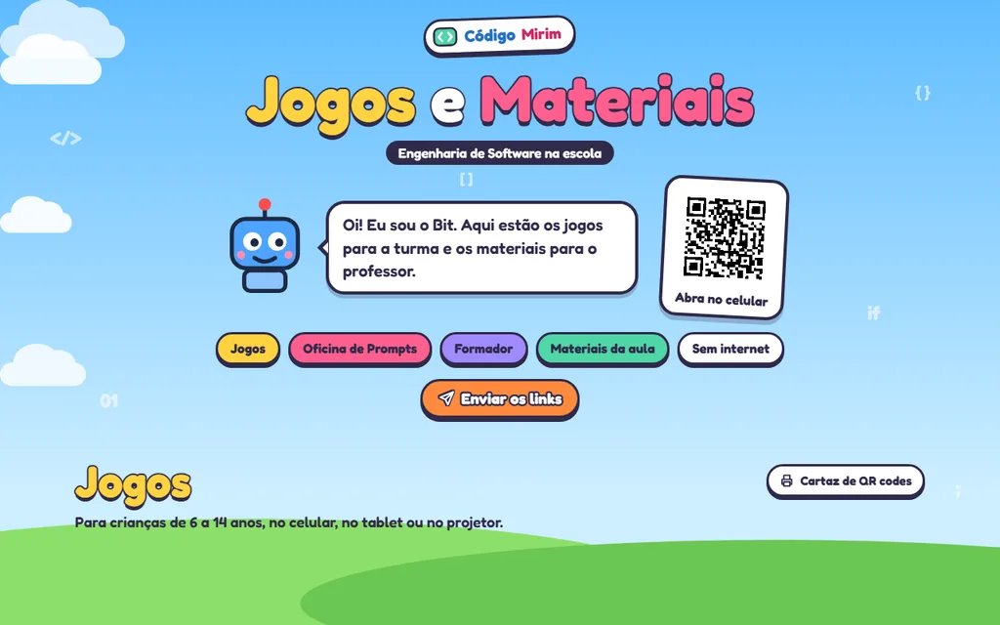
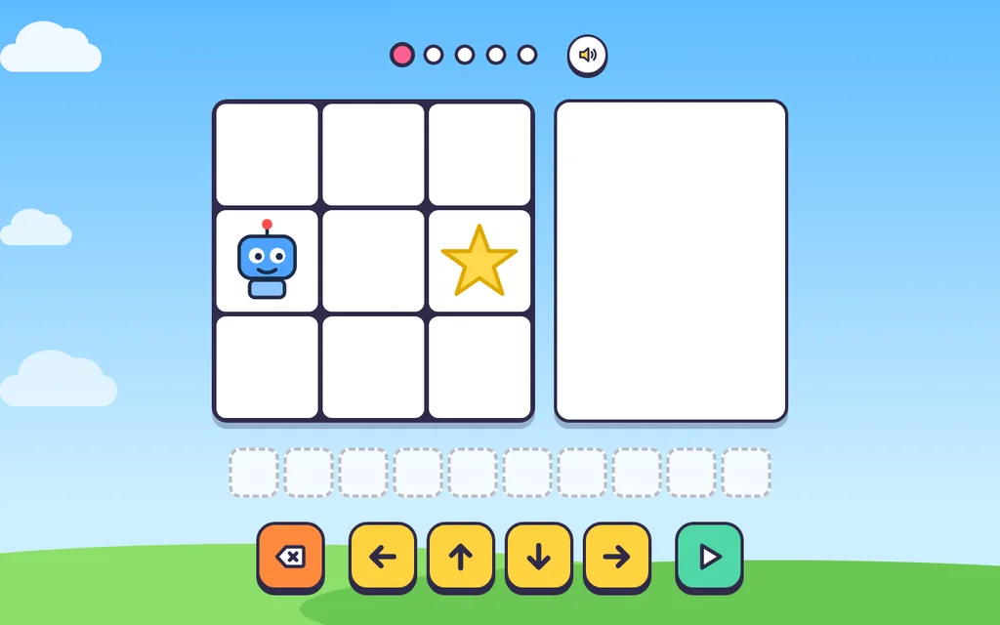
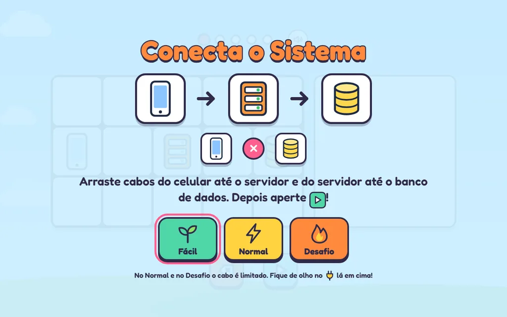
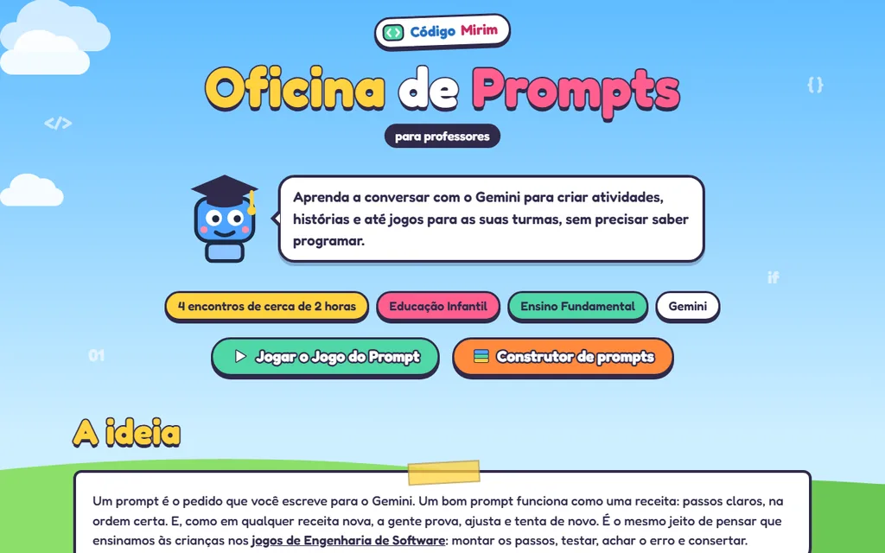

Código Mirim
Games that introduce programming to kids aged 6 to 14, and a workshop that teaches teachers to create their own materials with AI.

- Who it's for
- Kids aged 6 to 14 and their teachers
- My role
- Building the site, the games and the materials
- With
- UNIPAMPA's Software Engineering program, Alegrete campus
- Built with
- HTML, CSS and JavaScript, hosted on GitHub Pages
The idea
Introduce programming and software engineering to kids in a way that fits into one class: short games that work on a phone, a tablet or a projector, and ready-made materials so the teacher can run the class and keep the topic going afterwards.
In the games, kids put commands in order, hunt bugs, program in pairs and find out how an app talks to a server and a database. For teachers, the Prompt Workshop shows how to use Gemini to create activities, stories and even games for their own classes, without knowing how to code.
The site itself is in Portuguese, for schools in Brazil.
What's inside
🎮 Games for the class
- Robot gets the star 6+
- Bug Ninja 6+
- Pair Programming 7+
- Connect the System 8+
- Code Arcade, with three quick games
- Bug Hunt!
📚 Class materials
- Slides for the projector
- A 50-minute lesson plan
- Activity sheets
- Maps of the 15 Pair Programming levels
- Junior Programmer certificate
✨ Prompt Workshop
- Training in four sessions
- Online course with a final quiz
- Prompt Game and prompt builder
- Prompt library and ready-made Gems
- Teacher's guide and game gallery
Design decisions
-
Works offline
After the first visit, the games and pages are stored on the device and open even without a connection. It can be installed as an app on the phone's home screen.
-
Short links and QR codes
Every game has an address you can read out loud or write on the board, such as …/Codigo-Mirim/ninja, and a big QR code to project. Links can also go straight to WhatsApp and Google Classroom.
-
Ready to print
The lesson plan, activity sheets, level maps and certificates come out as A4 PDFs, generated from the pages themselves.
-
No sign-up
No game asks for a login, and the site collects no data from the kids. Just open it and play.
-
Accessible
Colors with checked contrast, zoom allowed and larger touch areas in the fastest games.
-
Easy to maintain
HTML, CSS and JavaScript, with no frameworks and no server: the whole site is hosted for free on GitHub Pages.
A closer look



My role
I build Código Mirim: the site, the games, the class materials and the Prompt Workshop. The Robot gets the star game is by Paulo Severo, and the other games follow the same style. The project is made with UNIPAMPA's Software Engineering program, at the Alegrete campus.
Código Mirim is still in progress: new games and materials keep landing on the site, and the existing ones keep getting better.